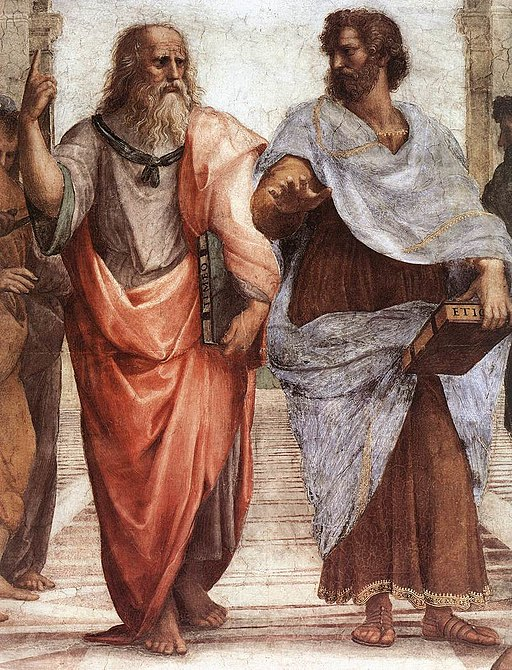

<head>
<meta charset="UTF-8" />
<meta name="keywords" content="drawing, painting" />
<meta name="description" content="drawings by Sunjy" />
<title>Sunjy</title>
<link rel="shortcut icon" type="image/x-icon" href="../../mImages/mCommon/favicon.ico" media="screen" />
<link rel="stylesheet" type="text/css" href="../../mCsses/mCommon/mCssA.css" />
<link rel="stylesheet" type="text/css" href="../../mCsses/mCommon/mCssB.css" />
<link rel="stylesheet" type="text/css" href="../../mCsses/mCommon/mCssC.css" />
<link rel="stylesheet" type="text/css" href="../../mCsses/mCommon/mCssD.css" />
<link rel="stylesheet" type="text/css" href="../../mCsses/mContent/mCssA.css" />
<link rel="stylesheet" type="text/css" href="../../mCsses/mContent/mCssB.css" />
<link rel="stylesheet" type="text/css" href="../../mCsses/mContent/mCssC.css" />
<link rel="stylesheet" type="text/css" href="../../mCsses/mContent/mCssD.css" />
</head>
<script type="text/javascript" src="../../mScripts/mContent/mContentAA.js" /></script>
<script type="text/javascript" src="../../mScripts/mContent/mContentAB.js" /></script>
<script type="text/javascript" src="../../mScripts/mContent/mContentAC.js" /></script>
<script type="text/javascript" src="../../mScripts/mContent/mContentAD.js" /></script>
<script type="text/javascript"></script> 
<script type="text/javascript">
document.write('<div class="mImgAbsolute"></div>');
/*
document.write('<p class="mFontSizeBColor" />From a white paper...</p>');
document.write('<table class="center"><tr><td>');
document.write('');
document.write('</td></tr></table>');
*/
</script>


<script type="text/javascript">
document.write('<p class="mFontSizeBColor" />The School of Athens</p>');
document.write('<p class="mFontSizeSColor" />By Raphael. “The School of Athens” is one of the most famous frescoes of the Italian Renaissance. It is widely reproduced because of its artistry and because of the subjects portrayed. <br><br>In 1508, the 25-year old painter Raphael was summoned to the Vatican by Pope Julius II (1503-13) and given the most important commission of his career, the decoration of the Papal Apartments, including the Stanza Della Segnatura.<br><br>Raphael used the ample space with imposing coffered vaults to paint imagines of the greatest philosophers, mathematicians, thinkers, and artists of antiquity. All arranged in one area to symbolize the School of Athens.<br><br>In the center are Plato and Aristotle, two of the most influential philosophers of ancient Greece. Plato is on the left. He was a pupil of Socrates and is pointing up to the sky. His gesture is emphasizing the importance of ideas to the spirit.<br><br>His face was painted to resemble the great Renaissance artist and scientist Leonardo da Vinci. On the right is Aristotle, who was Plato’s pupil. His hand is open palm facing down to the earth to emphasize the importance of studying physical evidence as to the source of knowledge.<br><br>The fresco itself includes 21 distinct figures set against a backdrop of a school. The mural has images of statues. One statue is of Apollo, the Greek god of light and music, holding a lyre.<br><br>The other statue is of Athena, the Greek goddess of wisdom, shown in her Roman form as Minerva.</p>');
document.write('<table class="center" /><tr><td>');
document.write('<br>In 1508, the 25-year old painter Raphael was summoned to the Vatican by Pope Julius II (1503-13) and given the most important commission of his career, the decoration of the Papal Apartments, including the Stanza Della Segnatura.<br><br>Raphael used the ample space with imposing coffered vaults to paint imagines of the greatest philosophers, mathematicians, thinkers, and artists of antiquity. All arranged in one area to symbolize the School of Athens.<br><br>In the center are Plato and Aristotle, two of the most influential philosophers of ancient Greece. Plato is on the left. He was a pupil of Socrates and is pointing up to the sky. His gesture is emphasizing the importance of ideas to the spirit.<br><br>His face was painted to resemble the great Renaissance artist and scientist Leonardo da Vinci. On the right is Aristotle, who was Plato’s pupil. His hand is open palm facing down to the earth to emphasize the importance of studying physical evidence as to the source of knowledge.<br><br>The fresco itself includes 21 distinct figures set against a backdrop of a school. The mural has images of statues. One statue is of Apollo, the Greek god of light and music, holding a lyre.<br><br>The other statue is of Athena, the Greek goddess of wisdom, shown in her Roman form as Minerva." />');
document.write('</td></tr></table>');
document.write('<p class="mFontSizeBColor" />Plato and Aristotle</p>');
document.write('<p class="mFontSizeSColor" />By Raphael. </p>');
document.write('<table class="center" /><tr><td>');
document.write('');
document.write('</td></tr></table>');
</script>


